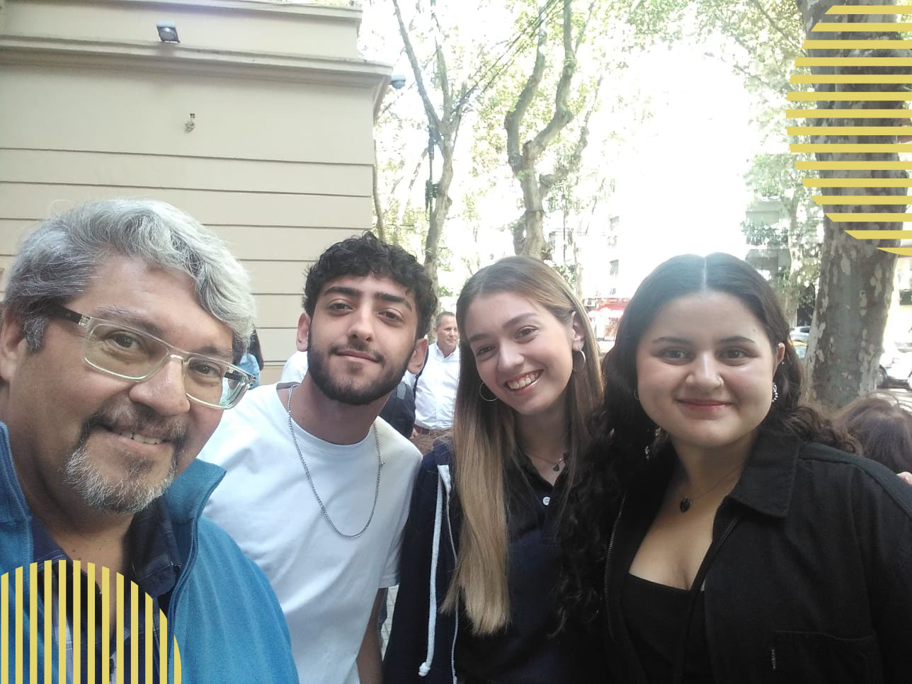

La Universidad Tecnológica Nacional entrega una mención de honor a aquellos alumnos de distintas instituciones que obtengan 100 puntos en sus exámenes de certificación (1era instancia), del Programa Digital Junior.
Digital Junior es un programa de certificación de conocimientos técnicos que trabaja con las escuelas para desarrollar proyectos educativos que integren los mejores contenidos y medios para que los estudiantes adquieran habilidades tecnológicas, permitiéndoles asegurar la excelencia en el conocimiento
.El viernes 22 de marzo de 2024, alumnos y ex-alumnos del CEAES, junto a las autoridades, asistieron a la sede de la UTN ubicada en la calle Medrano, para recibir las menciones de honor correspondientes. Recibieron estas últimas:
Bruno Alonso López
Vito Tomas Frega Barreiro
Camila Lipezker
Chiara Inés Peña González
Santiago Andrés Rodríguez
Matías Sandoval
Tiziano Nahuel Soto
Victoria Camila Vallarino
El evento se realizó en el Aula Magna de la Facultad, situada en planta baja. Los alumnos de distintos años del secundario, fueron subiendo al escenario a medida que escuchaban sus apellidos, para recibir las certificaciones que acreditan este gran logro.
Las mismas fueron entregadas por el ingeniero Jorge Almiña, director del Programa Digital Juniors
